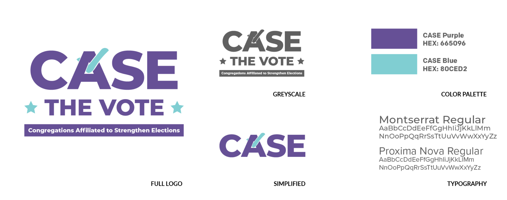
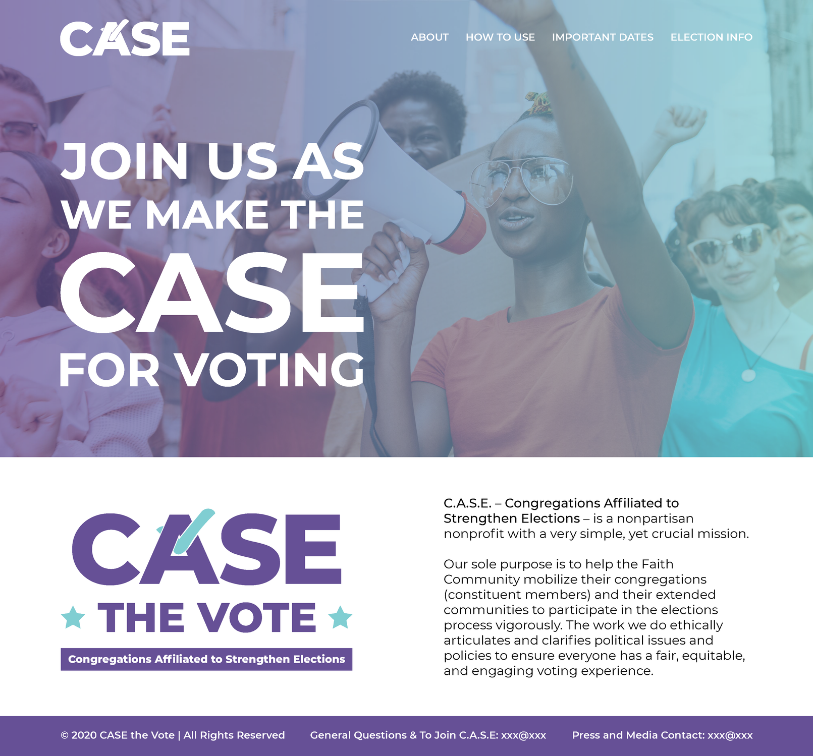
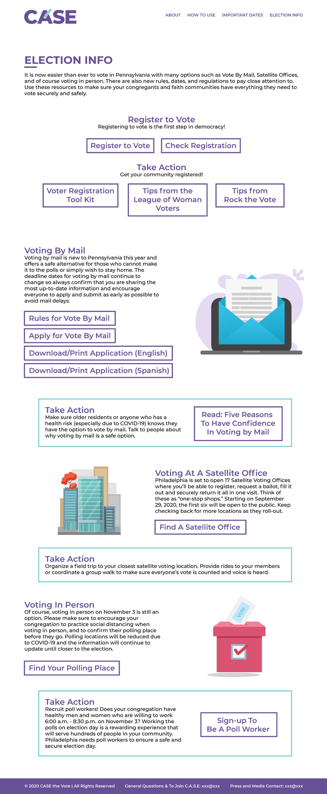
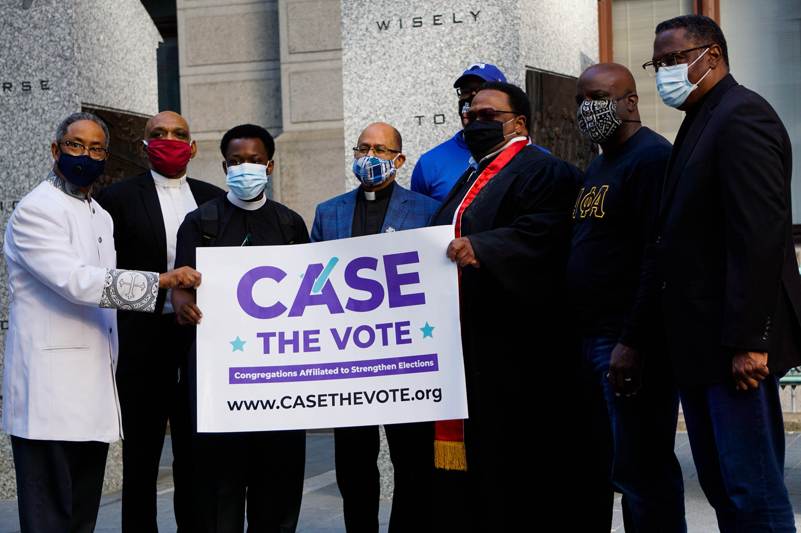

C.A.S.E. the Vote
Congregations Affiliated to Strengthen Elections (C.A.S.E.), was a nonpartisan nonprofit with a very simple, yet crucial mission—help the Faith Community mobilize their congregations and their extended communities to participate in the elections process vigorously. Founded in 2020, C.A.S.E. needed to develop their brand and develop it quick to work coincide with the 2020 elections.
I was tasked with developing the organization's branding, including the logo, color palette and typography along with a website and key marketing collateral.
For the logo, I wanted to create a clear voting-focused design while using colors other than red and blue to come off as more bi-patrician with respect to party affiliation of congregations and their members.
 For the website, it was focused more toward older congregation members. To design for this demographic meant clear directions to each page and all information was either repeated or the center of the views attention. This ensured the viewer was walking away with the information they needed without having to search very long.
For usage in press conference backdrops, videos, virtual backgrounds and other marketing collateral, a wide-range of designs were implemented and readily available for organization members.
As a result of the campaign the website received 2,011 unique visits and 3,955 total website visits with 7 media mentions including CBS3 and WURD Radio.
